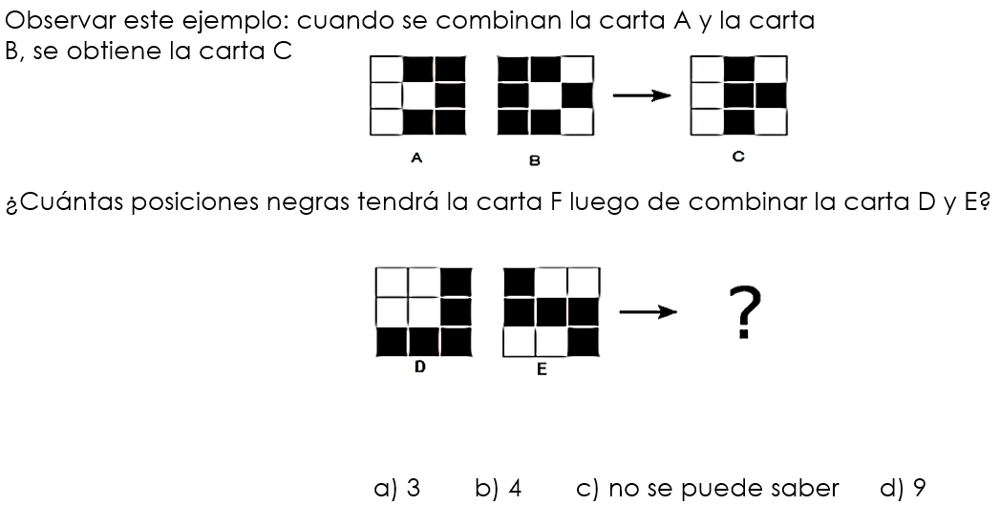

Programación 1
Lic. Rodrigo Albano


Evaluaciones
| Instancia | Mínimo | Máximo |
|---|---|---|
| Parcial 1 | 0 | 15 |
| Parcial 2 | 20 | 40 |
| Obligatorio 1 | 0 | 10 |
| Obligatorio 2 | 18 | 35 |
Para aprobar se deben obtener 70 o más puntos y superar los mínimos requeridos. Para exonerar se deben obtener 86 o más puntos y superar los mínimos requeridos.
Desarrollo del Curso
Objetivos del Curso
- Desarrollar el pensamiento computacional (PC): abstracción, resolución de problemas, reconocimiento de patrones y algoritmia.
- Desarrollar las habilidades básicas de programación utilizando un lenguaje de amplio uso.
Implica:
- Conocer, entender y aplicar los conceptos básicos de programación
- Poder diseñar e implementar soluciones de problemas no triviales en un lenguaje de programación
Relación Teórico - Práctico
- El práctico está desfasado del teórico para que primero se puedan ver los conceptos y luego en práctico ser aplicados
Práctico - Pensamiento Computacional
Práctico - Pensamiento Computacional
Práctico - Pensamiento Computacional
Práctico - Pensamiento Computacional
Práctico - Pensamiento Computacional
Práctico - Pensamiento Computacional

Práctico - Pensamiento Computacional

Práctico - Pensamiento Computacional
Práctico - Pensamiento Computacional

Práctico - Pensamiento Computacional
Práctico - Pensamiento Computacional

Práctico - Pensamiento Computacional
Práctico - Pensamiento Computacional

Práctico - Pensamiento Computacional

Práctico - Pensamiento Computacional
Práctico - Pensamiento Computacional
Práctico - Pensamiento Computacional

Práctico - Pensamiento Computacional

Práctico - Pensamiento Computacional
Práctico - Pensamiento Computacional
Práctico - Pensamiento Computacional
Práctico - Pensamiento Computacional

Práctico - Pensamiento Computacional

Práctico - Pensamiento Computacional

Práctico - Pensamiento Computacional

Práctico - Pensamiento Computacional
Práctico - Pensamiento Computacional
Práctico - Pensamiento Computacional

Práctico - Pensamiento Computacional
Práctico - Pensamiento Computacional

Práctico - Pensamiento Computacional
Práctico - Pensamiento Computacional
Práctico - Pensamiento Computacional
Ejercicios Adicionales
Ejercicios Adicionales

Ejercicios Adicionales

Ejercicios Adicionales
Ejercicios Adicionales
Ejercicios Adicionales
Práctico 3
Codificar en PSeInt
Pedir la base y altura de un triángulo. Mostrar su área
Algoritmo Ejercicio
Mostrar "Calculemos el area de un triangulo =)"
Mostrar "Ingrese la Base"
Leer base
Mostrar "Ingrese la Altura"
Leer altura
area = (base * altura) / 2
Mostrar "La altura del triangulo es: " + ConvertirATexto(area)
FinAlgoritmo
Codificar en PSeInt
Ingresar 3 valores enteros y mostrar el mayor de ellos. Ej: si se lee 1, -3, 5, mostrar: 5
Algoritmo Ejercicio
Mostrar "Ingresar Valor"
leer a
Mostrar "Ingresar Valor"
leer b
Mostrar "Ingresar Valor"
leer c
mayor = a
si(a>b)
mayor = a
SiNo
mayor = b
FinSi
si(c>mayor)
mayor = c
FinSi
mostrar "El mayor numero ingresado es: " + mayor
FinAlgoritmo
Codificar en PSeInt
Recibir valores y sumarlos tomando en cuenta las siguientes convenciones praticulares:
- Si se recibe un 0 se termina la suma y se muestra el total
- Si se recibe un 2 se suma y luego se duplica el total acumulado
- Si se recibe un número negativo se ignora
Algoritmo Ejercicio
suma = 0
dato = 99
Mientras dato <> 0 Hacer
Mostrar "Ingrese valor"
Leer dato
Si( dato > 0)
// El valor ingresado es positivo. Procedemos con la lógica
suma = dato + suma
Si(dato = 2)
suma = suma * 2
FinSi
FinSi
Fin Mientras
Mostrar "La sumatoria es de: " + ConvertirATexto(suma)
FinAlgoritmo
Codificar en PSeInt
Leer 5 valores y mostrar los siguientes resultados:
- La suma de los 2 primeros, la multiplicación del 3º y 4º; el promedio de los 5 y
- la suma de todos los resultados anteriores
Algoritmo Ejercicio
Mostrar "Ingrese valor 1"
Leer primero
Mostrar "Ingrese valor 2"
Leer segundo
Mostrar "Ingrese valor 3"
Leer tercero
Mostrar "Ingrese valor 4"
Leer cuarto
Mostrar "Ingrese valor 5"
Leer quinto
Mostrar "Suma de los 2 primeros es: " + ConvertirATexto((primero + segundo))
Mostrar "Multiplicación de 3º y 4º: " + ConvertirATexto((tercero * cuarto))
promedio = (primero + segundo + tercero + cuarto + quinto) / 5
Mostrar "Promedio: " + ConvertirATexto( promedio )
Mostrar "Sumatoria de los resultados anteriores es: " + ConvertirATexto(((primero + segundo) + (tercero * cuarto) + promedio))
FinAlgoritmo
Codificar en PSeInt
Recibir 6 valores y mostrar su suma en valor absoluto. Ej. si se lee -1, 2,-3, 4,-5,6, mostrar 21
Codificar en PSeInt
Pedir el ingreso de un número n. Mostrar la suma de todos los impares entre 1 y n.
Codificar en PSeInt
Pedir el ingreso de un número y mostrar sus dígitos en forma separada.
Asumir que el número ingresado es positivo
Codificar en PSeInt
Pedir el ingreso de 10 números. Mostrar el promedio de los que sean menores de 70 y mayores de 50.
Codificar en PSeInt
Dada una serie de números (terminada por el ingreso del número 0) indicar los dos números mayores de la misma.
Se asume que hay dos o más datos y no son negativos.
Codificar en PSeInt
Pedir el ingreso de un número n.
Luego pedir el ingreso de n números, e imprimir el mayor de ellos y la suma de todos los números desde el principio hasta ese máximo inclusive.
Ej: n = 7 Serie: 22 3 5 4 24 17 19 Mayor 24, Suma 58
Codificar en PSeInt
Ingresar la hora y minutos de entrada de un funcionario a la empresa, también la hora y minutos de salida.
Indicar la cantidad de horas y minutos que trabajó.
Se asume que el funcionario entra y sale durante el mismo día.
Codificar en PSeInt
En una maratón se controlan los tiempos que demoran cada uno de los corredores (en minutos).
Se desea saber cuál fue el peor y mejor tiempo realizado.
Al iniciar se indica la cantidad de corredores.
Se asume que la maratón dura como máximo 5 horas y que participan 3 o más corredores.
Ejercicio Adicional - PSeInt
Leer n y mostrar los primeros números de la serie de Perrin hasta dicho n. Se definen:
- P(0) = 3
- P(1) = 0
- P(2) = 2
- P(n) = P(n − 2) + P(n − 3) si n > 2.
Ejemplo: si se ingresa n=6, se muestra:
- 3 0 2 3 2 5 5
- 3 0 2 3 2 5 5 7 10 12 17
Posible Solución
Proceso sin_titulo
mostrar "ingrese n"
leer n
p0=3
p1=0
p2 =2
si (n=0)
mostrar p0
FinSi
si (n=1)
mostrar p0
mostrar p1
FinSi
si (n>=2)
mostrar p0
mostrar p1
mostrar p2
FinSi
para i =3 hasta n con paso 1 Hacer
nuevo = p0 + p1
p0=p1
p1 = p2
p2 = nuevo
mostrar nuevo
FinPara
FinProceso
Ejercicio Adivina el Número - PSeInt
El sistema genera un número al azar entre 0 y 9999 y solicita valores al usuario. El usuario ingresa el número y el sistema debe indicar si acertó o no. Cuando acierta termina el juegoVersión 2
Cuando acierta el número, indicar cuántos números fueron ingresados.Versión 3
Luego de cada ingreso de un número por parte parte del usuario, si no acertó, el sistema le da una sugerencia sobre ese número: “es muy grande” o “es muy chico”. Por ejemplo, si el sistema generó el número 1234 y el usuario ingresó 1500, el sistema debe decir “es muy grande”.Ejercicio Adivina el Número - PSeInt
Versión 4
Luego de mostrada la sugerencia, se le debe preguntar al usuario si desea rendirse, solicitar la pista o continuar ingresando. Si decide rendirse, se le debe mostrar por pantalla cual era el número que debía adivinar, y la cantidad de intentos que realizó. Si el usuario solicita la pista, el sistema debe mostrarle con que cifra termina el número que debe adivinar (investigar módulo 10).Versión 5
La pista se puede solicitar una única vez. Luego de utilizada, informar que ya se usó.Versión 6
Se comienza la partida con 100 puntos. El juego termina cuando el usuario adivina el número o cuando su cantidad de puntos llega a 0. Por cada intento se le resta un punto, y si decide solicitar la pista, se le restan 50 puntos.Posible Solución - Adivina el Número
Algoritmo AdivinaElNumero
numeroAdivinar = Azar(1000)+1
acerto = falso
usoPista = falso
rendirse = falso
puntaje = 100
intentos = 0
Mostrar "Bienvenidos al juego Adivina el Número"
Repetir
Mostrar "Ingresar un número: "
Leer dato
intentos = intentos + 1
Si dato == numeroAdivinar
acerto = verdadero
SiNo
// Comenzamos con la lógica
Si dato > numeroAdivinar
Mostrar "El número que se ingresó es muy grande"
SiNo
Mostrar "El número que se ingresó es muy chico"
FinSi
opc = 0
Mostrar "Opciones"
Mostrar "1. Rendirse"
Mostrar "2. Reintentar"
puntaje = puntaje - 1
Si No(usoPista)
Mostrar "3. Usar pista"
FinSi
Repetir
Mostrar "Ingrese opción: "
Leer opc
Hasta Que opc == 1 o opc == 2 o (opc == 3 y No(UsoPista))
Si opc == 1
rendirse = verdadero
SiNo
Si opc == 3 y No(UsoPista)
UsoPista = verdadero
Mostrar "La última cifra del número es: " + ConvertirATexto(numeroAdivinar mod 10)
puntaje = puntaje - 50
FinSi
FinSi
FinSi
Hasta Que acerto o puntaje <= 0 o rendirse
Si acerto
Mostrar "Acertaste :) El número es " , numeroAdivinar , " y el puntaje es ",puntaje
FinSi
Si rendirse
Mostrar "Rendición :( El número era " , numeroAdivinar
FinSi
Si No(acerto) y puntaje <= 0
Mostrar "Perdió :( El número era " , numeroAdivinar
FinSi
Mostrar "Se realizaron ", intentos " intentos "
FinAlgoritmo
Práctico 4 - Consola
Números & Booleanos
100 + 4*11;
x = 3;
y = 4;
z = 2;
f = false;
(x>z) && (y>z)
(x + y / 2) <= 3.5
! f
! f || (( x= 3*y))
f && (x > z + y)
10 > 9
x === 5
x !== 5
x >= 8
x <= 8
(x < 10 && y > 1)
f === true && true
false || (3===4)
1/0
-3/0
0/0
3.15
Number.MAXVALUE;
Number.MAX_VALUE;
Number.MIN_VALUE;
Math.PI;
Strings
"hola"
"hola" + " que tal"
"hola".length
"hola".toUpperCase()
"hola".charAt(2)
Para convertir de textos a números:
parseInt("124")
Investigar:
"13"+7
typeof("137")
typeof(137)
Práctico 5 - Snippets
Chrome => DevTools (F12) => Source => Snippets Chrome => DevTools (F12) => Control+Shift+P => "Show Snippets"
Codificar en Snippet
Pedir la base y altura de un triángulo. Mostrar su área.
Ej. si se lee 6 y 2, muestra 6.
console.log('Calculemos el area de un triangulo =)');
var base = parseInt(prompt("Por favor, ingrese la base"));
var altura = parseInt(prompt("Por favor, ingrese la altura"));
var area = ((base * altura) / 2)
console.log('El area del triangulo es: ' + area);
alert("El area del triangulo es: " + area);
Codificar en Snippet
Ingresar 3 valores enteros y mostrar el menor de ellos.
Ej. si se lee: 1, -3, 5, mostrar: -3
alert('Calculemos el menor de 3 numeros enteros');
var val1 = parseInt(prompt("Por favor, ingrese el primero"));
var val2 = parseInt(prompt("Por favor, ingrese el segundo"));
var val3 = parseInt(prompt("Por favor, ingrese el tercero"));
var menor = val1;
if(val2 < val1){
menor = val2;
}
if(val3 < menor){
menor = val3;
}
alert('El menor es: ' + menor);
Codificar en Snippet
Ingresar 3 datos y mostrar la suma de sus valores absolutos.
Ej. si se lee -1, 5, -30 => mostrar: 36
alert("Ingresar 3 datos y mostrar la suma de sus valores absolutos");
var val1 = parseInt(prompt("Por favor, ingrese el primero"));
var val2 = parseInt(prompt("Por favor, ingrese el segundo"));
var val3 = parseInt(prompt("Por favor, ingrese el tercero"));
var suma = Math.abs(val1) + Math.abs(val2) + Math.abs(val3);
alert("La sumatoria de los valores absolutos es: " + suma);
Codificar en Snippet
Pedir el ingreso de un número n. Mostrar la suma de todos los impares que sean múltiplos de 3 entre 1 y n.
Ej. si se ingresa 16 => muestra 27
alert("Calculemos la suma de los impares y multiplos de 3, comprendidos entre 1 a 'n'");
var dato = parseInt(prompt("Por favor, ingrese 'n'"));
var suma = 0;
// Iteramos
for(i = 1; i <= dato; i++){
// Verificamos si es IMPAR y Multiplo de 3
if( !(i % 2) == 0 && (i % 3) == 0 ){
suma = suma + i;
}
}
alert("La sumatoria es de: " + suma);
Codificar en Snippet
Ingresar 10 números. Mostrar el promedio.
Codificar en Snippet
Ingresar 10 números. Se asumen positivos. Indicar la diferencia entre el mayor y el menor
Codificar en Snippet
Se ingresa una cantidad de segundos (menor a un millón) y debe mostrarse a cuántos días, horas, minutos y segundos corresponde.
Codificar en Snippet
Se ingresan los datos de dos personas que se sabe nacieron el mismo año. De cada una se indica nombre, dia y mes.
Debe informarse quién de ellos es el mayor, o la indicación de que ambos nacieron en la misma fecha.
Codificar en Snippet
Se ingresan 3 números y debe retornarse un texto con el signo del resultado del producto de los mismos
Ej: 1, -4, 7 muestra "el signo es -"
Codificar en Snippet
Escribir un programa que reciba un número de 3 dígitos e indique si es un número de Armstrong
Nota: un número de Armstrong es aquel en el cual la suma de cada uno de sus dígitos elevado al número total de dígitos es igual al a sí mismo.
Ej: Si evaluamos 153 ==> 13 + 53 + 33 = 153
Ej: Si evaluamos 371 ==> 33 + 73 + 13 = 371
Ejercicio Adicional
Realizar una página con un script que calcule el valor de la letra de un número de DNI (Documento nacional de indentidad).
El algoritmo para calcular la letra del dni es el siguiente:
- El número debe ser entre 0 y 99999999
- Debemos calcular el resto de la división entera entre el número y el número 23.
- Según el resultado, de 0 a 22, le corresponderá una letra de las siguientes: (T, R, W, A, G, M, Y, F, P, D, X, B, N, J, Z, S, Q, V, H, L, C, K, E)
- Si lo introducido no es un número deberá indicarse con un alert y volver a preguntar.
- Deberá de repetirse el proceso hasta que el usuario ingrese "CANCELAR"
¡Hasta la Próxima Semana!